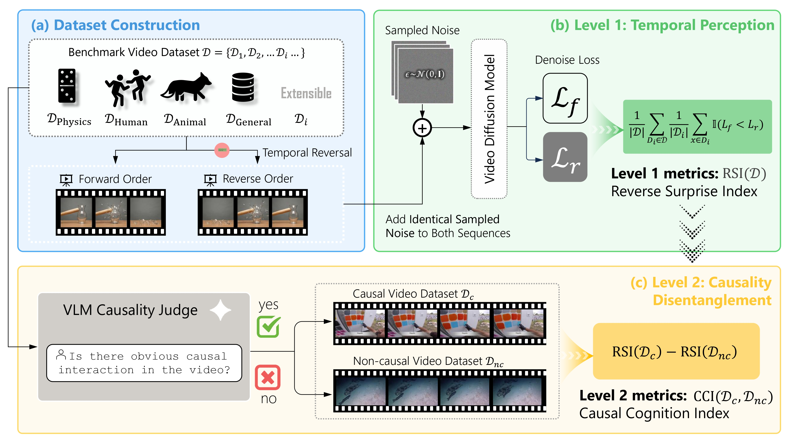

As video diffusion models (VDMs) advance toward world models, a key question arises: do they truly understand causality, or merely overfit to statistical temporal patterns? Existing benchmarks mostly rely on synthetic data, limiting real-world generalization due to the sim-to-real gap. We present YoCausal, a two-level benchmark inspired by the Violation of Expectation (VoE) paradigm from cognitive science. By temporally reversing real-world videos at zero cost as natural counterfactual samples, YoCausal establishes an infinitely extensible evaluation protocol. Level 1 introduces the Reverse Surprise Index (RSI), quantifying arrow-of-time perception via denoising loss. Level 2 introduces the Causality Cognition Index (CCI), which leverages a VLM to stratify datasets into causal and non-causal subsets, disentangling genuine causal reasoning from temporal bias. Evaluation of 13 state-of-the-art VDMs reveals that perceiving the arrow of time does not imply understanding causality, and a significant gap persists relative to human-level causal cognition.

Overview of the YoCausal evaluation framework.
| Rank | Model | Release Date | General | Physics | Human | Animal | Average |
|---|
| Rank | Model | Release Date | CCI(D) | Normalize | RSI(Dc) | RSI(Dnc) |
|---|
| Rank | Model | RSI Avg | RSI Rank | CCI(D) | CCI Rank | Aggregate Score |
|---|
We provide two submission protocols for the leaderboard:
🚨 To submit your results to the leaderboard, please send to this email with your result json files.
🚨 For more submission details, please refer to this link.